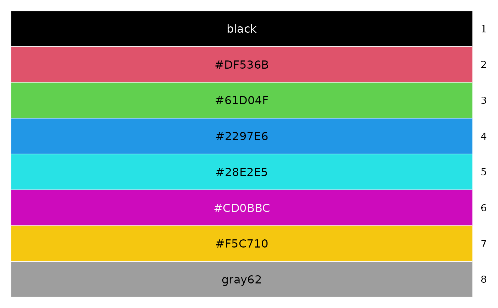
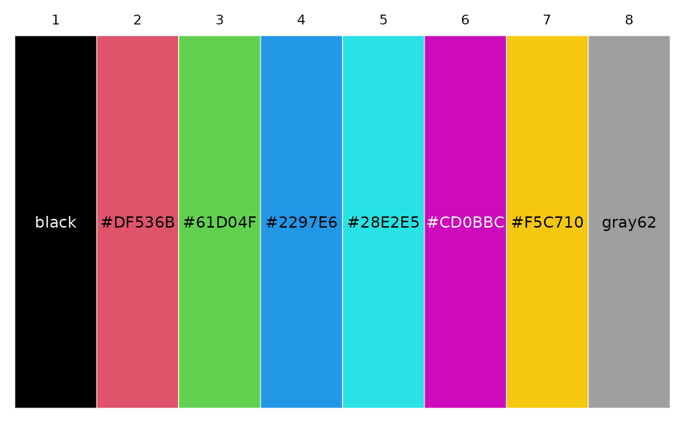
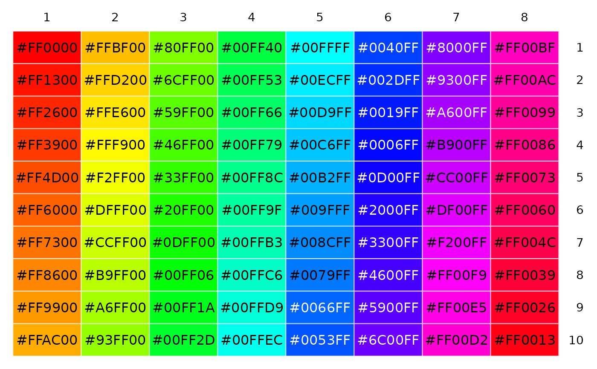
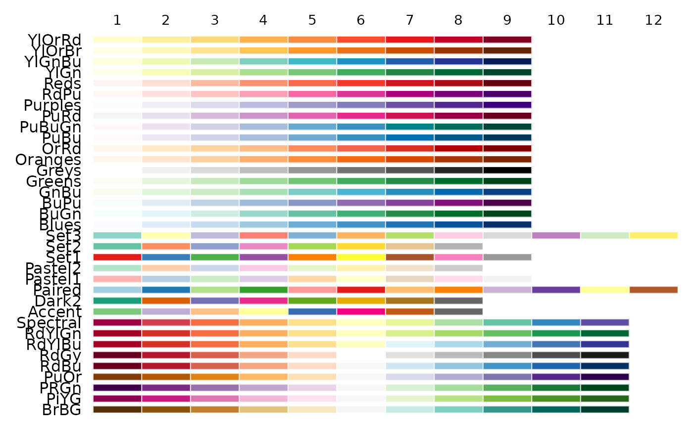
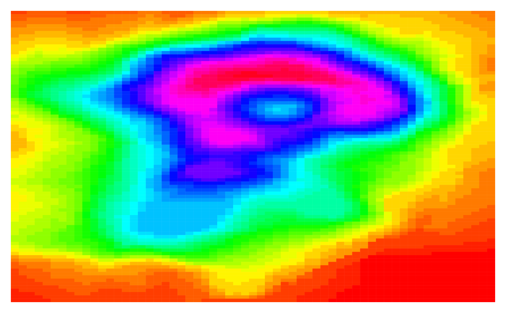

Pass plot_color() R colors, and it will draw each color in a grid of
colored rectangles/cells. The background color of each cell will be the
specified colors. By default, the color name will be printed in the
foreground of the cell (in a color that contrasts with the background).
plot_color() and print_color() are sister functions that both display
color cells. The primary difference is where the colors are displayed: in the
console or in the graphics device.
Usage
plot_color(
col,
label = TRUE,
index = TRUE,
border = graphics::par("bg"),
cex_label = 1
)Arguments
- col
A vector, matrix, or list of vectors/matrices, all containing R colors. Can be character or numeric.
- label
TRUE/FALSEfor whether print the color names.- index
TRUE/FALSEfor whether to print row and column indices (as applicable).- border
Border color for each cell. Use
NAfor transparent borders, orNULLto make borders match the cell background colors.- cex_label
Size of printed color names, as multiplier of default size.
Value
Invisibly returns a gtable (aka grob table) object.
Details
Drawing is handled via the gtable and grid packages.
If col is a vector, it's treated as a 1-column matrix. If col is a list,
then any vector within it is treated as a 1-row matrix.
If col is a named list, the names are printed in the left margin.
The foreground text color of each cell is determined by bg2fg().
See also
print_color() for printing colors in the console.
Examples
plot_color(palette()) # vertical

plot_color(list(palette())) # horizontal

plot_color(matrix(rainbow(80), ncol = 8))

# Plot all the RColorBrewer palettes
if (requireNamespace("RColorBrewer")) {
pals <- sapply(rownames(RColorBrewer::brewer.pal.info), function(pal) {
RColorBrewer::brewer.pal(Inf, pal)
}) |> suppressWarnings() |> rev()
plot_color(pals, label = FALSE)
}
#> Loading required namespace: RColorBrewer

# Convert 'volcano' to a matrix of colors, then plot
mat <- volcano
n <- 50
color_idx <- cut(mat, breaks = n, labels = FALSE)
color_mat <- structure(rainbow(n)[color_idx], dim = dim(mat))
plot_color(color_mat, label = FALSE, index = FALSE, border = NULL)
